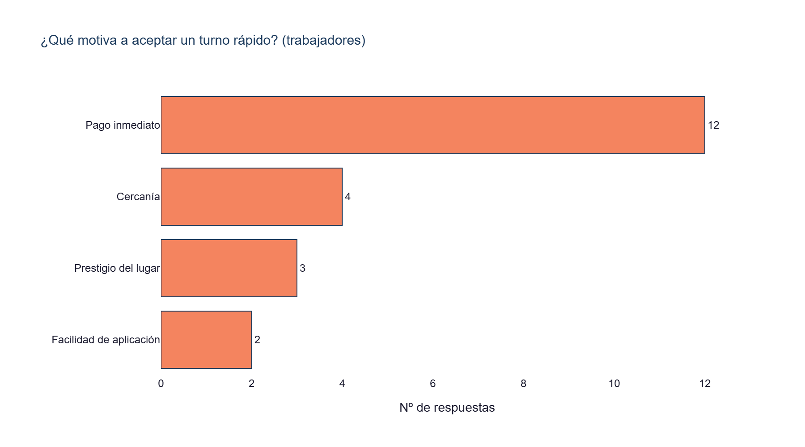
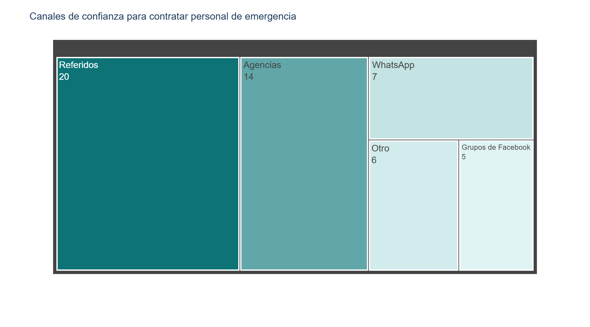
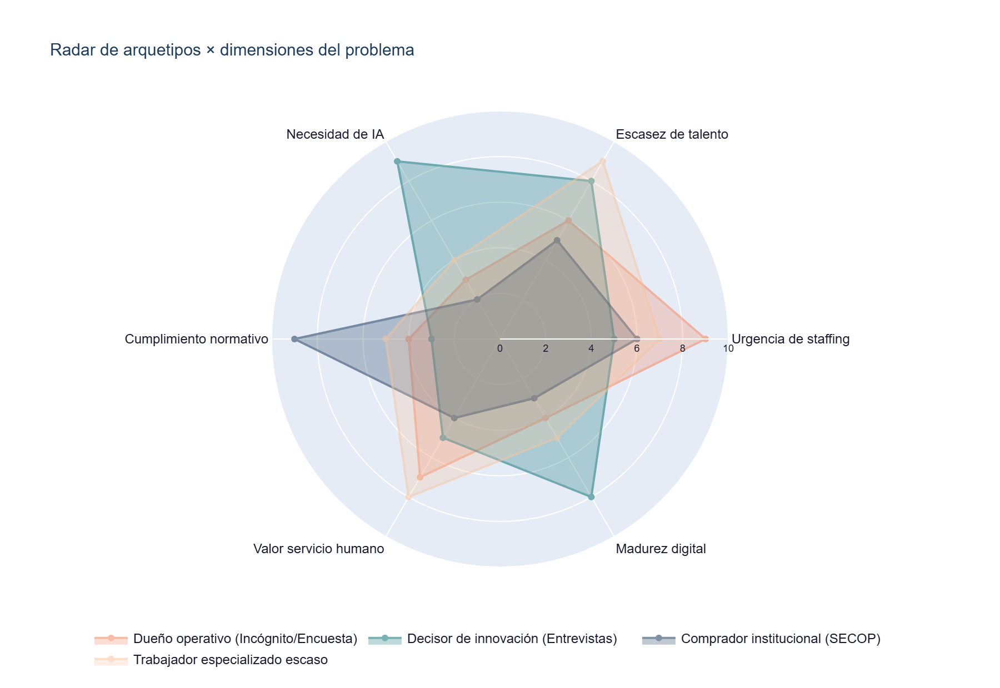
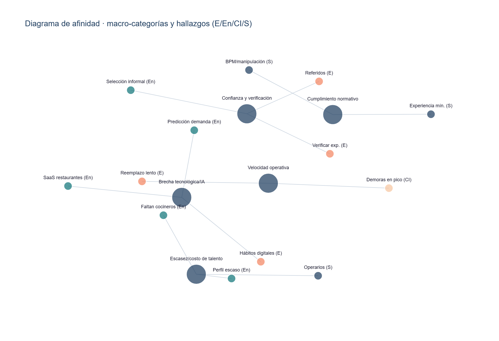
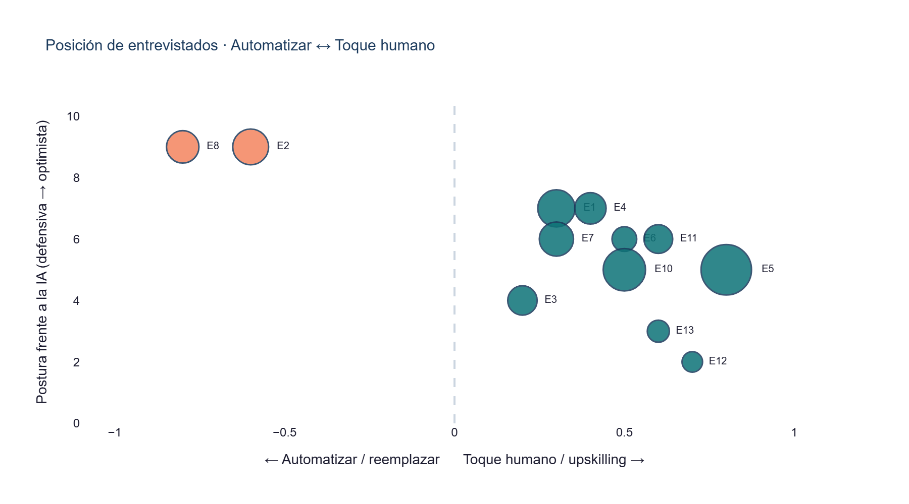

Universidad Nacional de Colombia
Destroyers
Validación de mercado — Sector HORECA
Michael Betancourt
Julián Vargas
Jerónimo Gómez
Manuela Pardo
Mateo Herrera
Macro-sector · Punto de partida
Servicios y Economía Digital — Trabajo Digno
Reto elegido
¿Cómo anticipar los impactos de la automatización y la inteligencia artificial en el empleo industrial colombiano?
Perfil base
Ingeniero con capacidad en analítica de datos y modelación de sistemas
Conocimientos clave
Matemáticas · Estadística · Teoría de sistemas
Dominio
Economía digital · Transformación del trabajo por tecnologías emergentes
Reto académico →
Estrategias de transición laboral ante automatización e IA. Prospectiva del empleo industrial en Colombia.
→
Hipótesis de proyecto →
El sector HORECA concentra el impacto: empleo informal, baja capacitación y sustitución tecnológica inminente.
El Problema
La reforma laboral destruyó 109.000 empleos en HORECA.
Los que quedan no se consiguen a tiempo.
Un restaurante que necesita un mesero para el pico del almuerzo lo busca por WhatsApp entre conocidos. Tarda horas. El turno ya pasó.
La Solución
Bolsa de empleo HORECA con dos canales: WhatsApp para quien contrata, web para quien busca trabajo y quiere formarse.
WhatsApp — Establecimiento
Publica el turno por mensaje. Recibe candidatos verificados. Confirma en segundos. Sin aprender una app nueva.
Web — Bolsa Trabajador
CV, experiencia y certificaciones registradas. Con o sin experiencia previa. Match con ofertas del sector.
Web — Upskilling IA
Cursos de IA aplicada y certificaciones BPM. Cada logro mejora el perfil y sube el ranking en la bolsa.
El establecimiento no cambia su hábito — la plataforma llega donde ya trabaja.
Metodología · Trabajo de Campo
4 instrumentos. 69 puntos de contacto.
45
respuestas
Encuesta web
WhatsApp · Facebook · Instagram
21 trabajadores · 16 dueños · 8 consultores
45 filas × 16 variables
12
entrevistas
Semiestructuradas
60–90 min c/u · escenario neutral
Gerentes, founders, baristas,
trabajadores, proveedores SaaS
2
establecimientos
Cliente incógnito
Observación etnográfica
Sanfer (Teusaquillo)
Magallanes (Usaquén)
10
procesos
SECOP II
Contratación pública sector alimentos
BPM · experiencia · bioseguridad
Arquetipo institucional emergente
Análisis cuantitativo: frecuencias, JTBD, sentimiento.
Cualitativo: 11 códigos temáticos sobre 12 transcripciones.
Observación: informes síntoma→causa→feature.
Análisis Encuesta · ¿Qué mueve a las personas del sector?
Los trabajadores quieren ingresos flexibles.
Los empleadores contratan por confianza, no por plataformas.
Motivadores para aceptar un turno rápido

Canales de confianza para contratar personal

Fuente: Encuesta · 45 respuestas · análisis de frecuencias multiselect
Arquetipos · Escritorio vs. Campo
Asumimos 5. El campo confirmó 4 y reveló 4 que no existían.
Trabajo de escritorio — hipótesis previas
| Arquetipo | Veredicto | Evidencia de campo |
|---|
| Estudiante Regular | ✓ Confirmado | Pool de baches horarios (Sanfer) |
| Estudiante Horeca | ↺ Refinado | Disponibilidad > afinidad gastronómica |
| Bartender | ↺ Refinado | Valor = profesionalización, no el oficio |
| Mesero formal | ↺ Refinado | Runner/ayudante por horas (Magallanes) |
| Sommelier | ✕ Descartado | Nicho de lujo sin representación |
Arquetipos emergentes — solo visibles en campo
| Arquetipo emergente | Fuente | Ficha |
|---|
| Comprador institucional | SECOP II | Exige BPM, exp. mín., seguridad social |
| Decisor de innovación | Entrevistas | Contrata estandarización + datos |
| Trabajador especializado | Entrevistas | Escaso, caro de formar (≥6 meses) |
| Proveedor Tech / SaaS | Entrevistas | Aliado/competidor capa B del marketplace |
Análisis Transversal · Radar multi-arquetipo
4 arquetipos validados. Necesidades completamente distintas.

Dueño operativo
Urgencia de staffing máxima. Baja madurez digital. Decide por costo y velocidad.
Decisor de innovación
Alto perfil de IA y escasez de talento tech. Compra estandarización, no cargos.
Comprador institucional
Cumplimiento normativo como eje central. BPM exigido en todos los contratos SECOP.
Trabajador especializado escaso
Alto valor del servicio humano. Difícil de hallar, caro de formar (≥6 meses).
Escala 0–10 · síntesis cualitativa de evidencia cruzada de campo
Validación · Red de Evidencia Transversal
8 insights candidatos. 5 con respaldo en ≥3 fuentes independientes.
| Insight candidato |
E |
En |
CI |
S |
# |
Prioridad |
| Cubrir turnos es lento y manual |
3 | 1 | 3 | — |
3 |
ALTA |
| La confianza/referido domina la contratación |
3 | 3 | 1 | 1 |
4 |
ALTA |
| Verificar experiencia es difícil |
3 | 2 | 1 | 2 |
4 |
ALTA |
| Escasez y costo de mano de obra |
2 | 3 | 2 | 1 |
4 |
ALTA |
| Faltan perfiles técnicos / especializados |
1 | 3 | 1 | 3 |
4 |
ALTA |
| IA para demanda, merma y contenido |
1 | 3 | — | — |
2 |
MEDIA |
| Cumplimiento normativo (BPM) |
1 | 1 | — | 3 |
2 |
MEDIA |
| Upskilling vs. reemplazo |
— | 3 | — | 1 |
2 |
BAJA |
E=Encuesta · En=Entrevista · CI=Cliente incógnito · S=SECOP II | 0=ausente · 1=hipótesis · 2=moderado · 3=sólido
Red de afinidad — hallazgos por fuente

Entrevistas · Posición en el eje IA — Automatizar vs. Toque Humano
El sector no rechaza la IA — rechaza ser reemplazado por ella.

10 / 12
entrevistados se posicionan hacia el toque humano + upskilling, no hacia la automatización pura
Los 2 pro-automatización (X negativo) son proveedores SaaS — Justo y Eatable Adventures. No son el mercado objetivo; son posibles aliados de la Capa B.
La tendencia real: trabajadores, gerentes y asesores quieren aprender a usar IA para ser más eficientes — no para ser reemplazados. El upskilling en IA es la oportunidad de diferenciación del marketplace.
"No dejarse reemplazar — aprender a usar las herramientas para que te hagan más valioso."
— Erick Sierra, Gerente Colcafé
Eje X: automatizar (−1) ↔ toque humano / upskilling (+1) · Eje Y: postura frente a la IA (defensiva 0 → optimista 10) · tamaño = extensión de la entrevista
Conclusiones · Dos ejes de acción
El mercado tiene un cuello de botella dual:
capacitación escasa + conexión informal.
8 / 12
entrevistas: escasez de perfiles técnicos o necesidad de upskilling
Factor Capacitación: Upskilling mínimo ≥6 meses. Faltan cocineros especializados, ingenieros de alimentos y perfiles de datos. El sector institucional exige certificación BPM recurrente.
10/12 entrevistados: upskilling > automatización (scatter IA)
8/12 entrevistas: falta de perfiles técnicos especializados
7/12 entrevistas: necesidad de plataforma / SaaS
3 perfiles con brecha ALTA en oferta–demanda
4 / 4
fuentes confirman: contratación por referidos directos, no plataformas
Factor Bolsa: Confianza/referido con respaldo sólido en todos los instrumentos. Turnos de refuerzo se cubren en horas o el establecimiento improvisa. Alta dependencia de métodos informales.
Confianza/referido: sólido en 4 fuentes
Turnos lentos: sólido en Encuesta + Incógnito
Sin arquetipo de oferta para técnico cocina, ing. alimentos
Sommelier descartado — demanda real ≠ escritorio
Propuesta · Arquitectura de Canales
El establecimiento no aprende una app nueva. El trabajador tiene todas las herramientas en un solo lugar.
📲 Establecimiento — vía WhatsApp
Restaurantes, bares y hoteles publican sus necesidades por WhatsApp. La plataforma gestiona el resto.
01
Escribe el turno por mensaje — rol, hora y tarifa
02
Recibe candidatos verificados con perfil y calificaciones
03
Confirma con un botón — sin registro previo obligatorio
04
Panel web opcional para gestión avanzada, historial y facturación
WhatsApp Business API · BSP Twilio / 360dialog
💻 Trabajador — vía Plataforma Web
Con o sin experiencia. El perfil crece con cada turno completado y cada certificación obtenida.
🅰️
Bolsa: CV, experiencia, fotos de certificados, disponibilidad y ubicación
🅰️
Match: ofertas que llegan según perfil; acepta con un clic
🅱️
Upskilling IA: predicción de demanda, merma, contenido gastronómico
🅱️
Certificaciones: BPM, manipulación de alimentos, cocina especializada — cada logro sube el ranking
Web + PWA · Node.js backend · autenticación por foto de certificado
Insight de campo →
El establecimiento ya opera por WhatsApp. Darle otra app es fricción que mata la adopción. La plataforma va a donde el dueño operativo ya está.
Prototipo · Así se ve la solución
De la hipótesis al producto: Sazón, el marketplace del talento gastronómico, ya está prototipado.
Landing — conecta talento y negocios
Doble puerta de entrada — «Soy talento» y «Soy un negocio» — ofertas que coinciden con el perfil.
Registro del negocio
Valida que sea una empresa legal (NIT + RUT / Cámara de Comercio) antes de aprobar.
Perfil del talento
Registro gratuito por rol (mesero, bartender, chef…) con certificados verificables.
Prototipo navegable — construido sobre los 4 arquetipos validados en campo: perfiles con certificados, negocios verificados y alertas que coinciden con el rol.
Próximos pasos · Únete al piloto
El sector HORECA ya confirmó el problema.
Ahora necesitamos construir la solución juntos.
Buscamos tres tipos de aliados para el piloto en Bogotá durante el segundo semestre de 2026:
Para establecimientos
¿Tu restaurante, bar u hotel necesita personal de refuerzo verificado?
Sé uno de los 10 establecimientos piloto — opera por WhatsApp desde el primer día, sin aprender nada nuevo.
Para trabajadores
¿Trabajas en el sector y quieres acceder a más turnos o certificarte en IA?
Regístrate en la lista de espera — primeros accesos con formación gratuita.
Para aliados & mentores
¿Tienes experiencia en HRtech, edtech o HORECA?
Conversemos — una reunión de 30 min puede cambiar la dirección del producto.
Contacto
destroyers.horeca@gmail.com
Universidad Nacional de Colombia
Creación y Gestión de Empresas · 2026